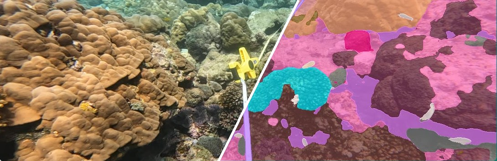

SeaQuery: A Metric-Conditioned Vision-Language Framework for Underwater Ecological Monitoring
IEEE Journal of Oceanic Engineering, MetroSea special issue
Conditions vision-language models on segmentation-derived reef metrics. Conditioning raises LLaVA-1.5-7B exact match from 37.44% to 60.20%, and explicit rules on the metrics give the most reliable reef-state decisions (90.82% accuracy).